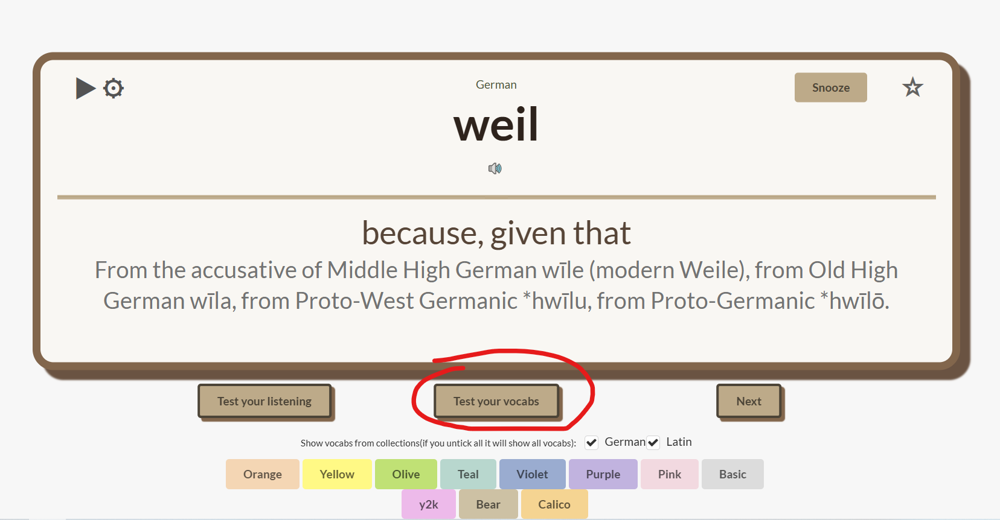
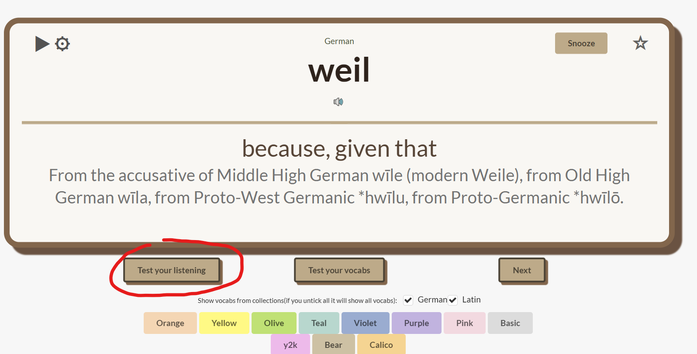
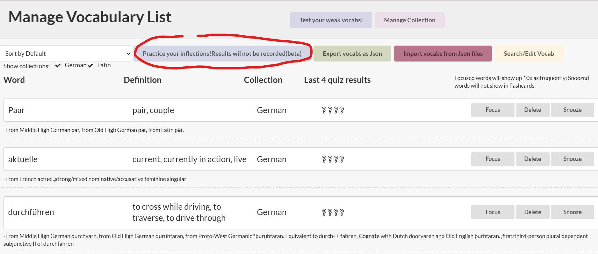

How do I use this extension?
-
Click the extensions icon, pin this extension.

-
Click the extension icon. Choose the decks you want to add, the vocabs will sync quickly to your vocab lists

You can click here to add decks

-
Open a new tab, click the cog button to set the time you want to autoplay the flashcards.
- Click the pay button to auto play flashcard.
- Click Snooze to snooze this vocab (it will not show up in flashcards)
- Click star to focus this vocab (it will show up more frequently in flashcards)
- Click the buttons to change pallete
- Click the speaker icon to listen to the sound of the vocab. It might needs to be pressed twice when you just open up a new tab.
- If you have a line telling you there are words that could be lacking etymology, you can press that line to start fetching those in the background. If you import a premade deck it is likely that they do not have etymology.
Sometimes quizzes will be auto generated for you to enhance your learning!
- Click the icon of this extension whenever you see a new word.
-
Enter the word you want to query, select the language and the collection you want to add it into (you can leave everything else blank) and press Add.The extension will look up everything you need for you. And then press 'Add to Database'.

Or,
Enter the word/phrase, definition and optional gender and pronunciation. Select the collection, press Add.
*You dont have to choose collection and language everytime, it will remember your last choice.
How to Import the Decks (in 3 steps)
How to look up words
How to make a deck and share to others
- First,Click the extension icon then press 'Manage Vocabulary List'.

- Then, press 'Export vocabs as Json' then check your download folder.

- If you want to upload a deck your friend made, you can press 'Import vocabs from Json files'

- Select the file you want to upload then refresh the page.

How to test your vocab
- First, press 'Test your vocab' when you open up a new tab
 - Choose the collection you want to test and press start button.

- You can do as many tests as you like. If you press 'End test', you will see your scores on each section compared to your past results on this collection and your scoring trend. Otherwise it will not be recorded.


How to test your listening



How to test your weak vocabs
- First,Click the extension icon then press 'Manage Vocabulary List'.
- Then, press 'Test your weak Vocabs', you will be tested on all the vocabs that you have got wrong more than twice in the last 4 quiz results(from newtab, test your vocabulary page, and this page.)

How to edit words
- First,Click the extension icon then press 'Manage Vocabulary List'.
- You can focus, snooze or delete words here.

- If you want to edit a word, Press 'search'

- You can edit its fields here, press 'Save' to save.

How to edit collections
- First,Click the extension icon then press 'Manage Vocabulary List'.
- Press 'Manage Collection'

- You can add a new empty collection or delete collection here

How to Practice latin & french inflections
- First,Click the extension icon then press 'Manage Vocabulary List'.
- Press this button. You should only choose collections that contains Latin and/or French words.

Easiest way of editing decks
- If you want to edit the decks that you download from this website (not from the page when you click extension icon), and you want to change the collection name, the easier way is to open it in a text editor and replaceAll the "book" field name to the name you desire.

What does this extension do?
I made this extension initially to help memorizing latin words, then somehow I just kept on adding more features.
This extension is designed to help you learn new languages by providing flashcards and quizzes based on your vocabulary lists. You can import premade decks, add new words, and customize your learning experience.
You can import and export the language flashcard decks.
This extension can generate quizzes based on your vocabulary lists - inflections, pronunciations, genders, everything.
It will automatically find pronunciations, gender, etymology for the vocab you look up. For Latin and French words it will fetch their inflections for you too!
If you want to test your vocab, press 'test your vocabs' when you open up a new tab.
This extension keeps track of the words you have learned and tested. If you want to test your weak vocabs, press 'test your weak vocabs' in the 'Manage Vocabulary List' page.
If you want to practice inflections for your Latin and French, press 'practice inflections' in the 'Manage Vocabulary List' page.
Now with ability to do listening tests
You can make collections for different topics or themes in the Manage Vocabulary Page.
Start learning with flashcards and quizzes!
Download premade decks
Q&A
- Q : What does the "Beta" for Chinese and Japanese mean?
- A : We fetch words from wiktionary.org. It is a little complicated when it comes to Chinese and Japanese languages.
Q : I have encountered some issues with this extension- A : Let me know using the contact details at the bottom, I will fix it. Or you can download the newest version from github at the bottom - sometimes it takes a while for the extension to get updated in the extensions store and I tend to do multiple bugfix in one update. So it is possible that your problem is solved in the github version.
Q : Will it support any more languages?- A : If you let me know what language do you want to add, I can look into it.
Q : Why is there no french vocab decks?- A : I can't find one thats in batch processable format. If you have one please let me know
Q : Will it support any other language other than english?- A : The chinese version is currently in development but since this extension gets its data from wiktionary, zh.wiktionary does not have as much entries
Q : How do i delete a word or a collection from my deck?- A : Yes, it is in the Manage Vocabulary page when you click on the extension icon.
Q : Can I contribute to the project or can I suggest something?- A : Yes, you can contribute to the project or suggest new features by writing me emails.
Q : How many vocabs can you store in this app?- A : Technically around 15000 words with definition, gender, etymology, and inflections. That should be enough for a while
Contacts
-
Email: xming0711@gmail.com -
GitHub: mingx0711 -
Discord: yourdiscord